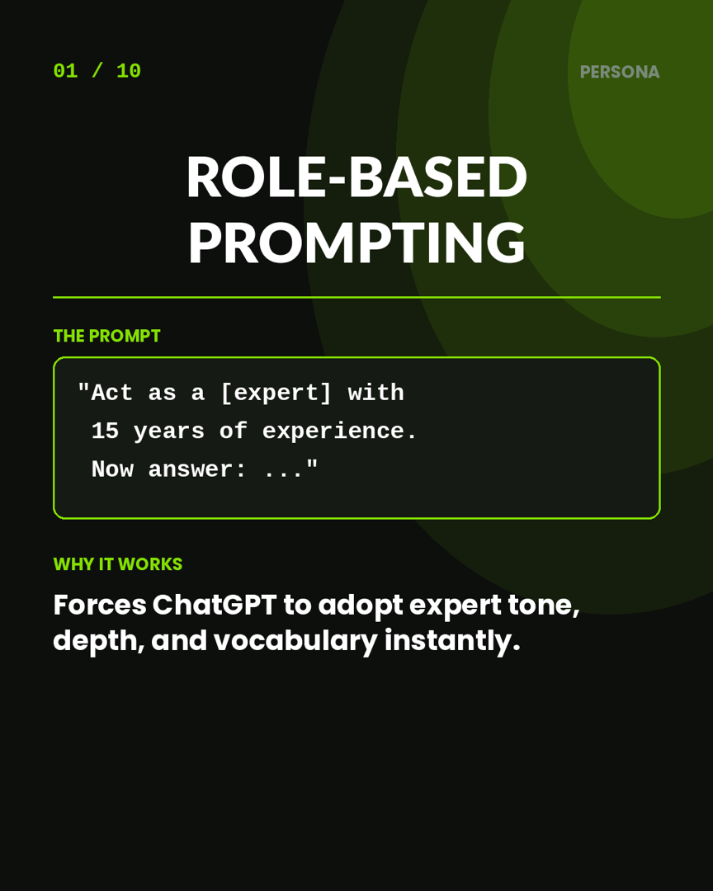
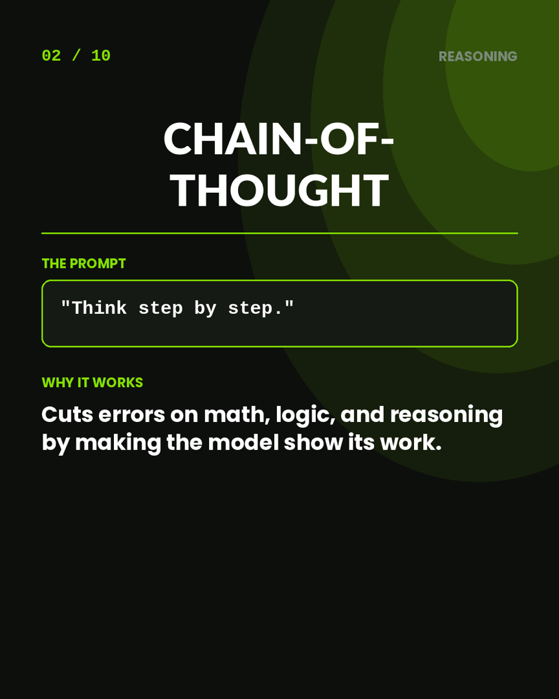
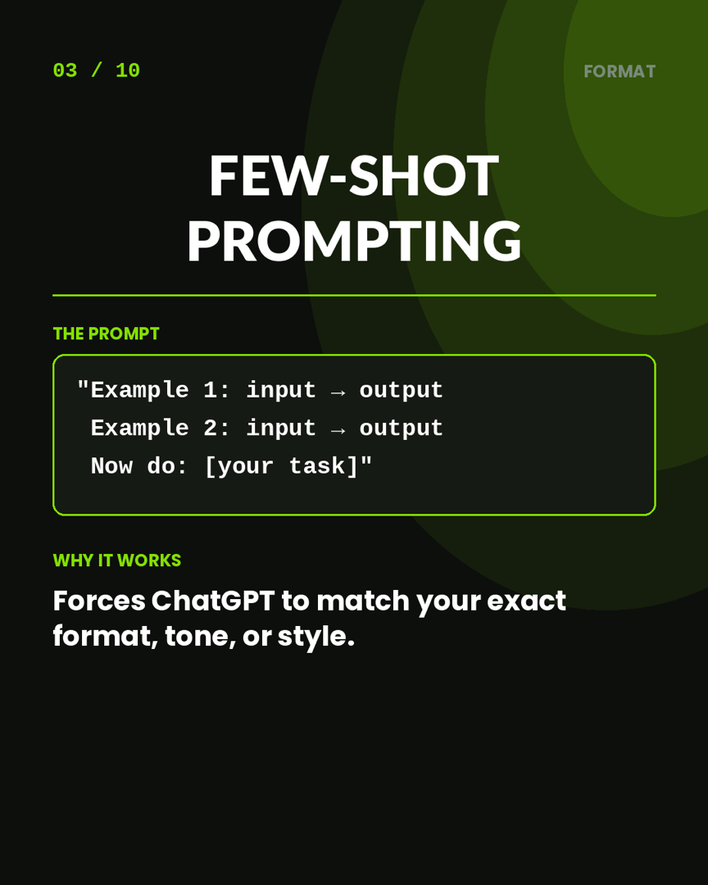
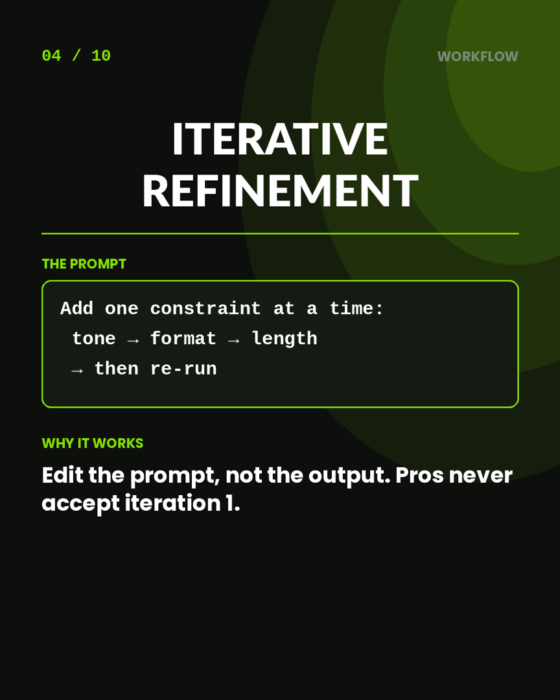
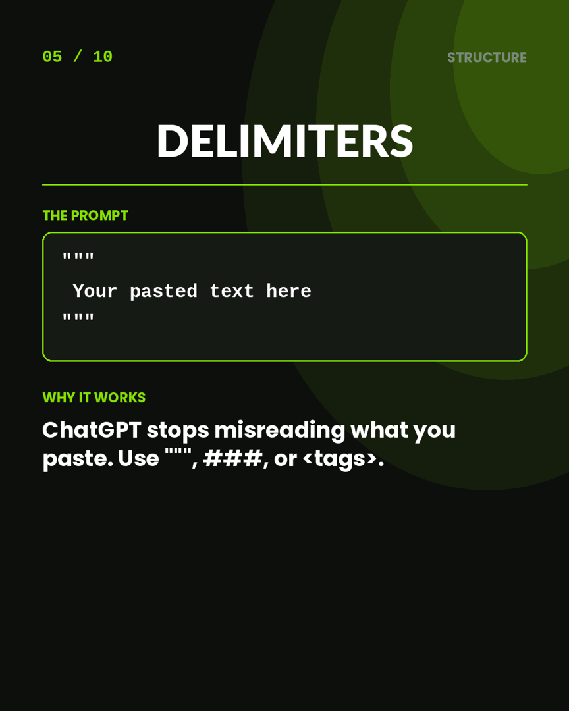
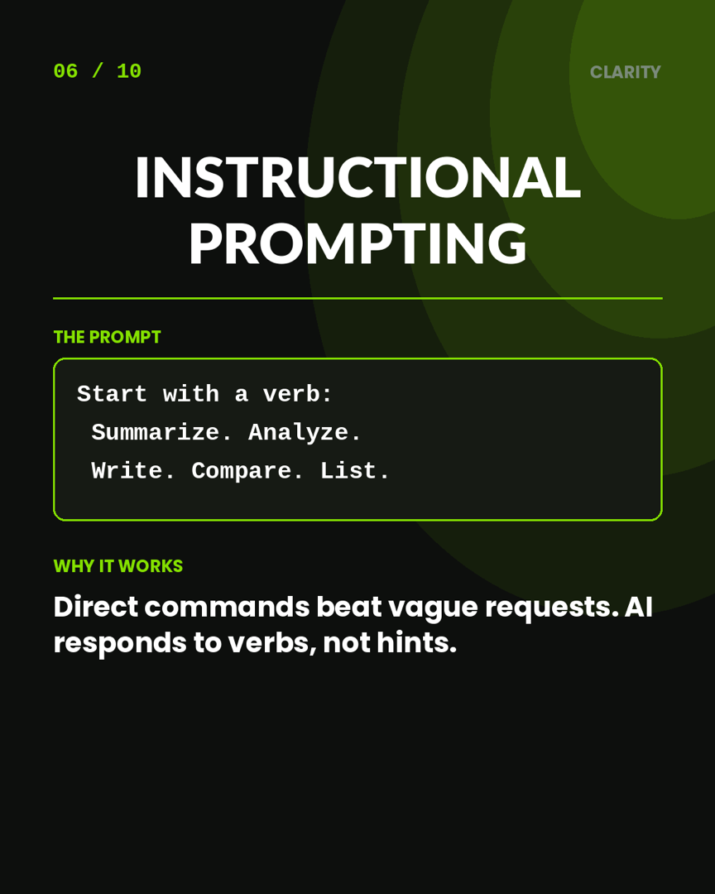
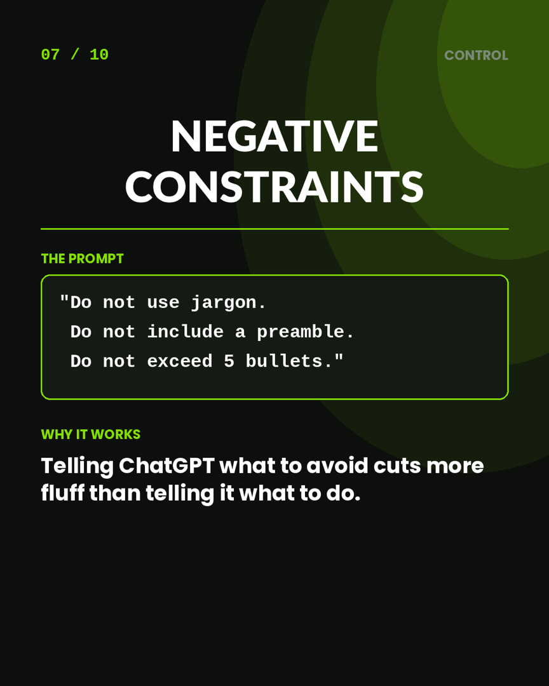
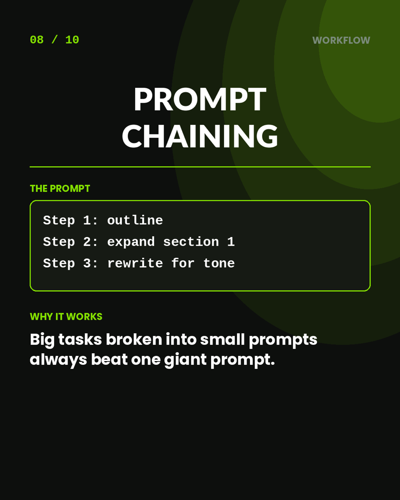
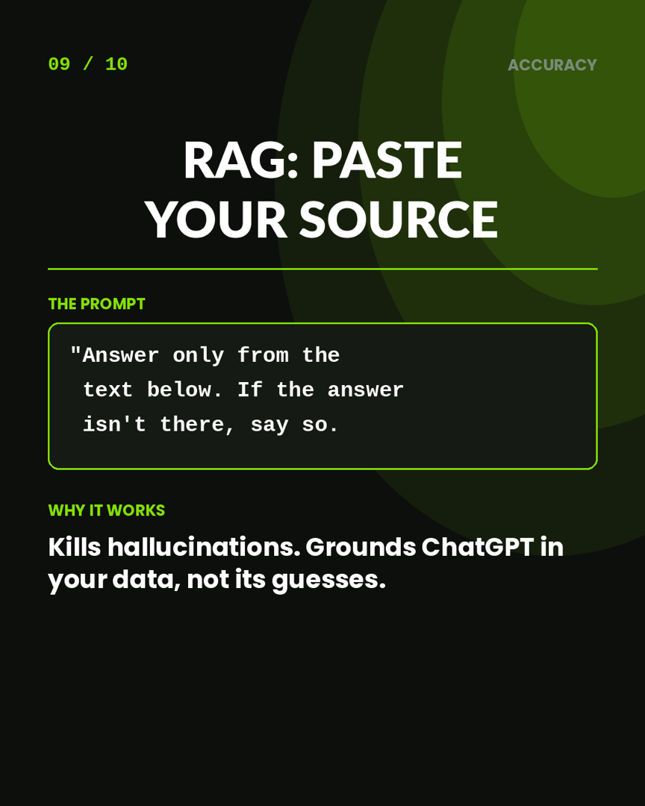
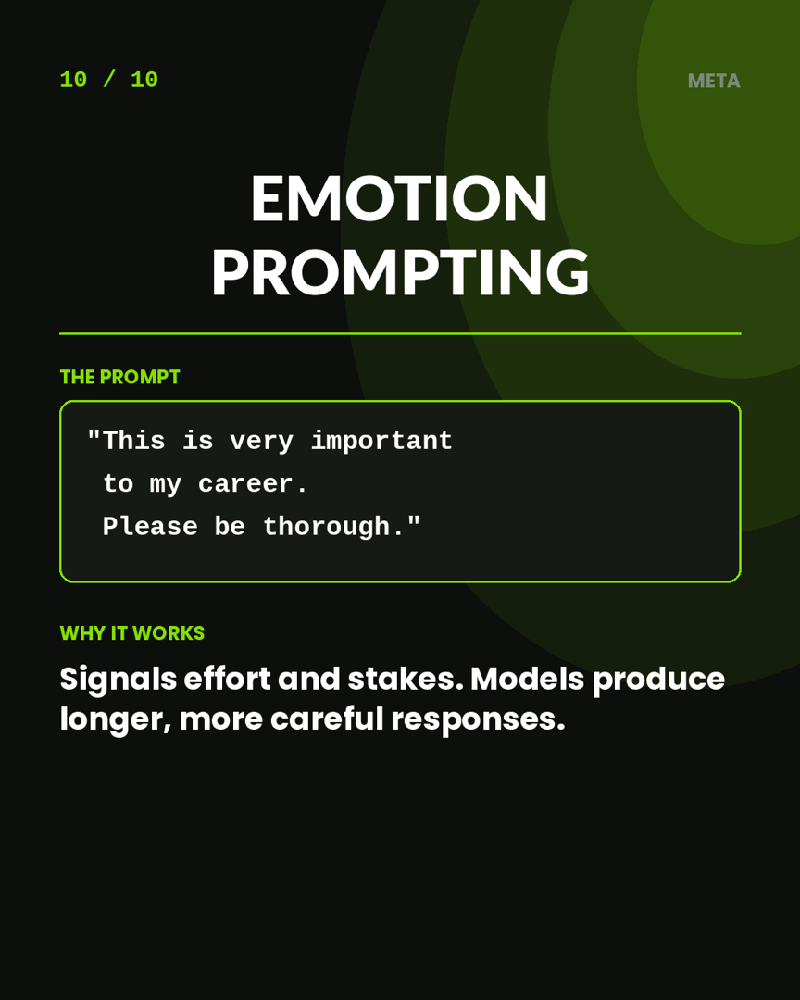

Carousel 01
The Swipe File
June 2026
10 ChatGPT Prompts
Pros Actually Use
The carousel, in text you can actually copy. Ten techniques, the exact prompt for each, why it works, and a link to the full breakdown. Nothing here is theory — every one of these has its own video and its own post.
R
Ryu Vy
AIToolsDaily24 · By a human, for humans
This started as a swipe-through on TikTok and Instagram. The problem with a carousel is that you can't copy anything out of a picture — so here it is as text, in the same order, with the deep dive attached to each one.
Use it as a reference, not a reading. Take the two or three that fit what you're stuck on and ignore the rest.
The Ten
Copy, Paste, Adjust
01 / 10Persona
Role-Based Prompting
"Act as a [expert] with
15 years of experience.
Now answer: ..."
Forces ChatGPT to adopt expert tone, depth, and vocabulary instantly.
Full breakdown →
02 / 10Reasoning
Chain-of-Thought
"Think step by step."
Cuts errors on math, logic, and reasoning by making the model show its work.
Full breakdown →
03 / 10Format
Few-Shot Prompting
"Example 1: input → output
Example 2: input → output
Now do: [your task]"
Forces ChatGPT to match your exact format, tone, or style.
Full breakdown →
04 / 10Workflow
Iterative Refinement
Add one constraint at a time:
tone → format → length
→ then re-run
Edit the prompt, not the output. Pros never accept iteration 1.
Full breakdown →
05 / 10Structure
Delimiters
"""
Your pasted text here
"""
ChatGPT stops misreading what you paste. Use """, ###, or <tags>.
Full breakdown →
06 / 10Clarity
Instructional Prompting
Start with a verb:
Summarize. Analyze.
Write. Compare. List.
Direct commands beat vague requests. AI responds to verbs, not hints.
Full breakdown →
07 / 10Control
Negative Constraints
"Do not use jargon.
Do not include a preamble.
Do not exceed 5 bullets."
Telling ChatGPT what to avoid cuts more fluff than telling it what to do.
Full breakdown →
08 / 10Workflow
Prompt Chaining
Step 1: outline
Step 2: expand section 1
Step 3: rewrite for tone
Big tasks broken into small prompts always beat one giant prompt.
Full breakdown →
09 / 10Accuracy
RAG: Paste Your Source
"Answer only from the
text below. If the answer
isn't there, say so."
Kills hallucinations. Grounds ChatGPT in your data, not its guesses.
Full breakdown →
10 / 10Meta
Emotion Prompting
"This is very important
to my career.
Please be thorough."
Signals effort and stakes. Models produce longer, more careful responses.
Full breakdown →
// If You Only Take Two
Delimiters and negative constraints. Neither is clever, both are unglamorous, and together they fix most of what goes wrong with a normal prompt — the model misreading where your pasted text starts, and the model padding the answer with preamble you didn't ask for.
The Original
All Twelve Slides
The carousel as posted, in order.










12 slides · 1080×1350